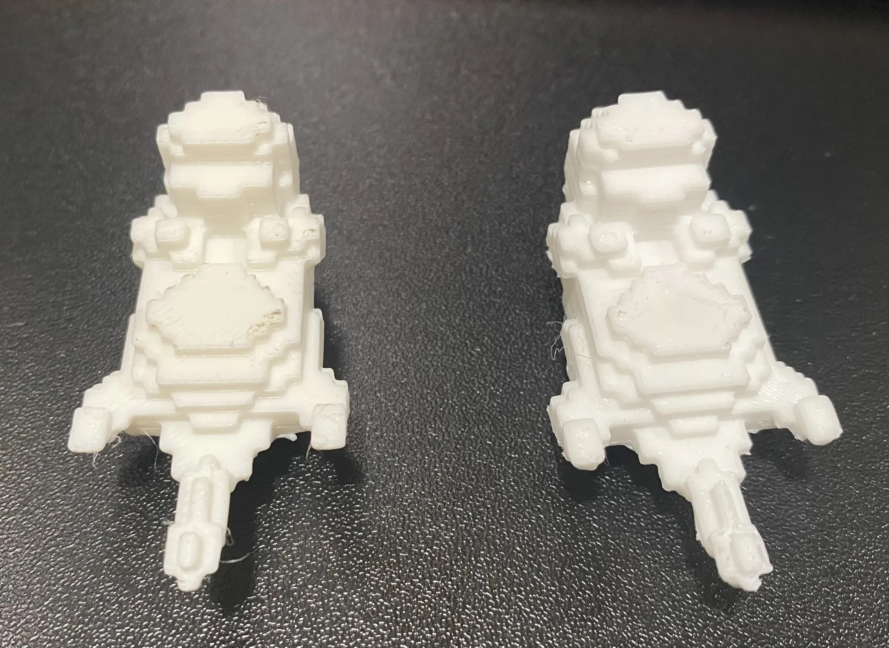
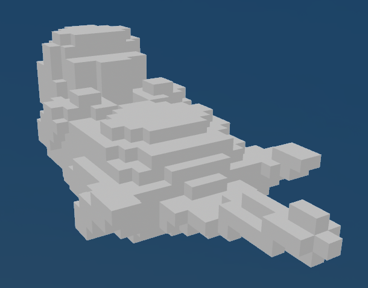

After extracting my otter build from the Minecraft server, this was how the prints turned out. The final print is on the left, and the draft is on the right. I would love to have the opportunity to print again at larger scales.

